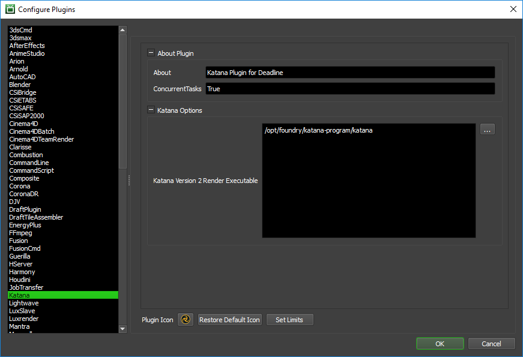
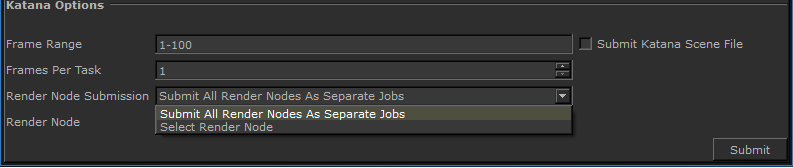
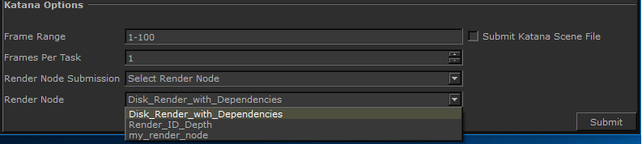

Katana¶
Job Submission¶
You can submit jobs from within Katana by installing the integrated submission script, or you can submit them from the Monitor. The instructions for installing the integrated submission script can be found further down this page.
Submission Options¶
The general Deadline options are explained in the Job Submission documentation.
The Katana specific options are:
Katana File: The file path to the .katana file to use.
Frame List: A comma-separated collection of single frames or frame ranges. ex: 1-2,3,4-6.
Submit Katana Scene File: If this option is enabled, the scene file will be submitted with the job, and then copied locally to the Worker machine during rendering.
Use Working Directory/Working Dir (Optional): If enabled/field entered, the current working directory will be used during rendering. This is required if your Katana project file contains relative paths.
Frames Per Task: This is the number of frames that will be rendered at a time for each job task.
Version: The version of Katana being used for this render job.
Render Node (optional): Enter the node in the Katana scene to render, or leave blank to render with the default render node.
Pipeline Tools¶
When using the integrated submitter to submit through Katana you have the ability to use any of the event plugins that you have enabled through the Deadline Monitor. This is done by opening the Pipeline Tools window via the Pipeline Tools button. This window is explained further in the Pipeline Tools documentation.
Plugin Configuration¶
You can configure the Katana plugin settings from the Monitor. While in power user mode, select Tools -> Configure Plugins and select the Katana plugin from the list on the left.
Note, if the executable supports a MAJOR.MINOR.REVISION (9.0.123) numbering system in its path, then you will need to configure the explicit exe path to the particular revision that you have installed on your machines. Deadline does not track every possible revision available or indeed where it might be custom installed to, so a studio should verify their exe paths are correct for each application version they choose to use with Deadline. Multiple exe paths can still be declared and the first one that is found on a particular Worker on a particular platform will be used from the exe list.
Render Executables
Katana Version 2 Render Executable: The path to the Katana 2 executable used for rendering. Enter alternative paths on separate lines.
Katana Version 3 Render Executable: The path to the Katana 3 executable used for rendering. Enter alternative paths on separate lines.
Katana Render Node Submission Types¶
When using Katana you can submit individual render nodes as separate jobs to Deadline from the Integrated Submitter, or you can choose to select a single render node to Deadline.
If you select “Select Render Node”, you will be able to choose which render node you would like to submit to Deadline.
Note this is only an option in the Integrated Submitter in Katana.
Integrated Submission Script Setup¶
The following procedures describe how to install the integrated Katana submission script. This script allows for submitting Katana render jobs to Deadline directly from within the Katana editing GUI.
You can either run the Submitter installer or manually install the submission script.
Submitter Installer¶
Run the Submitter Installer located at
<Repository>/submission/Katana/Installers.
Manual Installation¶
Windows
Create a folder named “Tabs” in any directory on your local machine.
Copy
[Repository]\submission\Katana\Client\DeadlineKatanaClient.pyto the “Tabs” folder on your local machine.Set the system environment variable KATANA_RESOURCES to the directory containing the “Tabs” folder you created.
Example: add DeadlineKatanaClient.py to
C:\KatanaSubmitter\Tabs, then set KATANA_RESOURCES toC:\KatanaSubmitter.
The next time you launch Katana, there should be a Thinkbox option under “Tabs” which will allow you to select “Submit To Deadline”.
Note that the Katana Submitter opens at a small size. The Katana submitter can be easily resized to fit your needs. A Katana Submitter window can also be integrated directly into Katana’s customizable tab view using click-and-drag.
FAQ¶
What versions of Katana are supported?
Deadline supports version 2 and upwards.
How do I capture my Katana environment at job submission time?
By default, we do NOT capture the submitting machine/user’s environment, but this is possible by adding a few extra KVP’s (Key=Value pairs) to the Katana submission script. This is explained further in our manual job submission documentation in the Environment section.
Error Messages and Meanings¶
This is a collection of known Katana error messages and their meanings, as well as possible solutions. We want to keep this list as up to date as possible, so if you run into an error message that isn’t listed here, please visit the Thinkbox Help Centre and let us know.
Currently, no error messages have been reported for this plugin.

{kind=link}
{kind=link}
{kind=link}
{kind=link}
{kind=link}